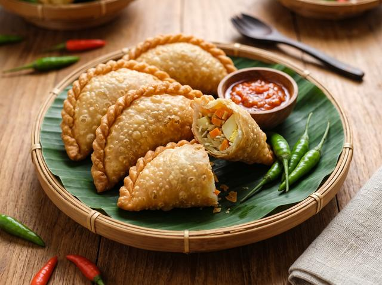

Masakan rumahan, dimasak segar setiap hari.
Pesan satuan untuk makan di rumah atau ambil paket grosir untuk arisan, pengajian, acara kantor dan hajatan.
Menu Andalan
Beberapa masakan yang paling sering dipesan.

Ayam Goreng Kremes 
Rendang Sapi 
Nasi Kuning Komplit 
Sayur Lodeh 
Risoles Ragout 
Brownies Kukus 
Nasi Box Komplit 
Tumpeng Mini
Hubungi Kami
Kirim pesan lewat WhatsApp untuk respons tercepat.
Alamat
Batara Parkview K8/24, Kabupaten Tangerang, Banten 15730
Buka di Google Maps
Jam buka
Senin–Minggu, 05.20–21.00
Tutup hanya saat kiamat